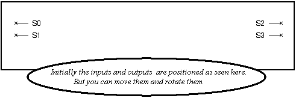

Creating a New Symbol
To create a new symbol for the current unit —
- In the Symbol Editor window, click the Create New Symbol icon:
.
The pins representing the unit interface ports are displayed. In the Symbol list box, a new Untitled entry is listed.
Figure 9‑16.
Untitled Entity

- Choose the Attributes > Page Setup command and, in the displayed dialog box, specify the orientation and page size to be used for this new symbol.
- Use the available drawing operations to create a geometric representation of the unit (see “Drawing in the Symbol Editor”).
- Move or rotate the pins (initially positioned at the edges of the window) as required, while drawing the symbol so that these pins are attached to the symbol's border.
- Save the symbol.